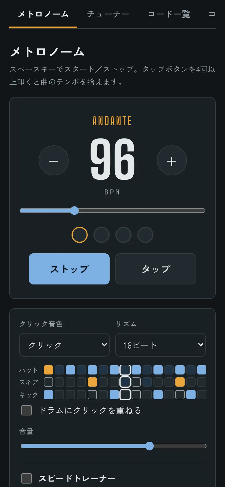
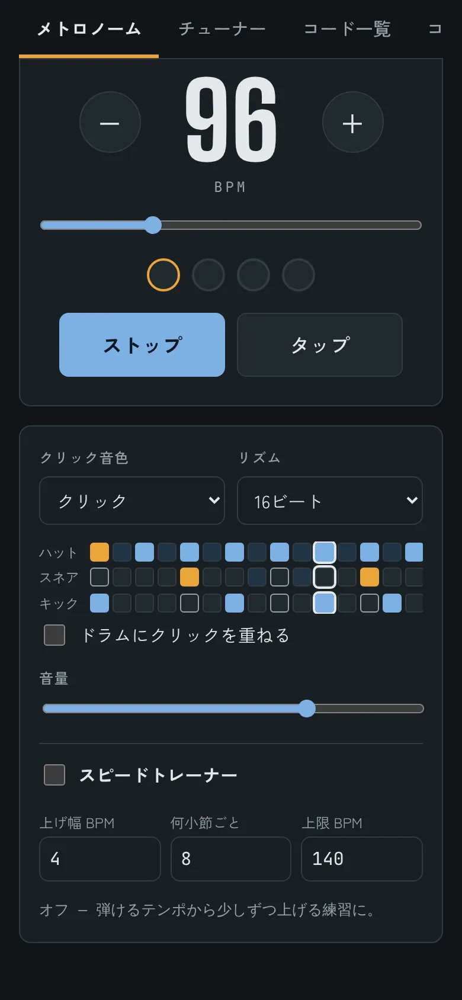
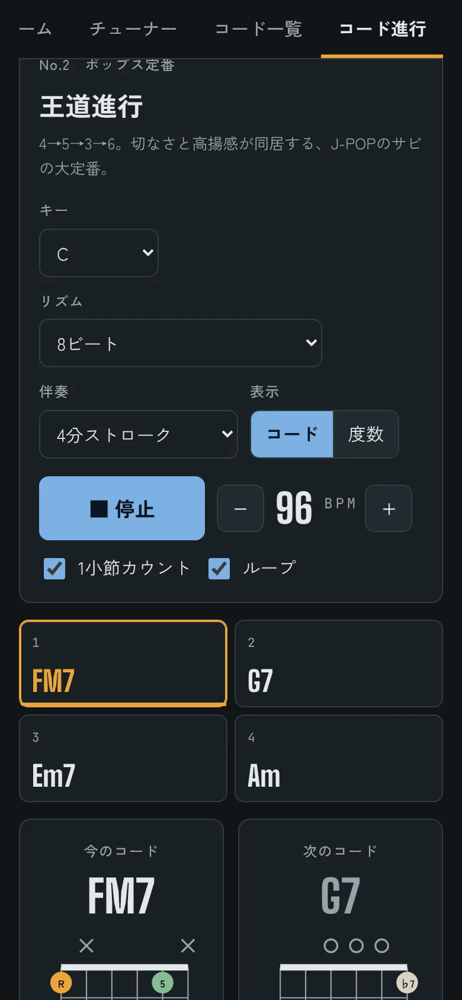
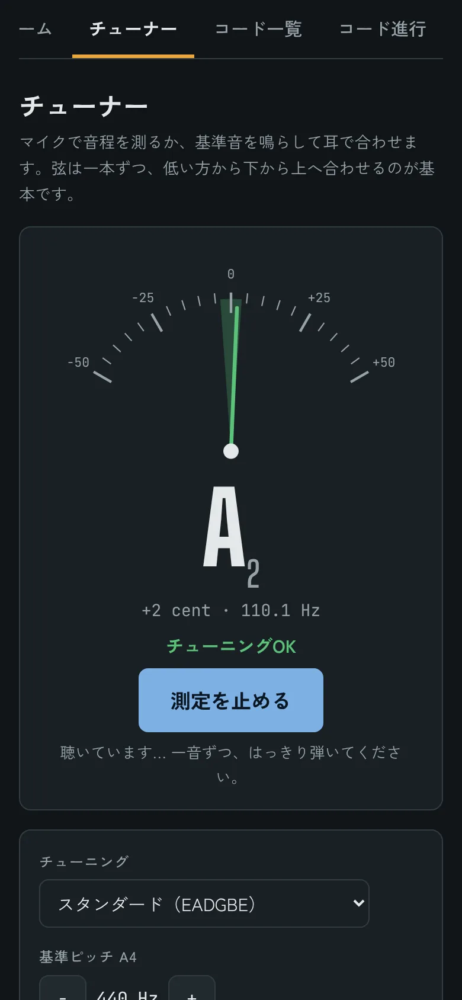
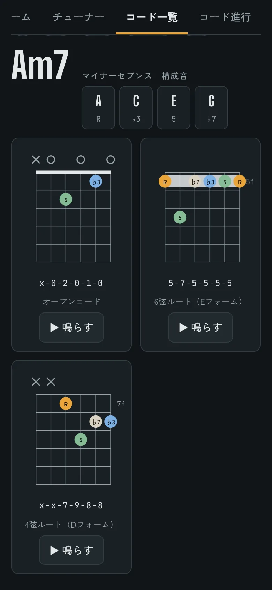
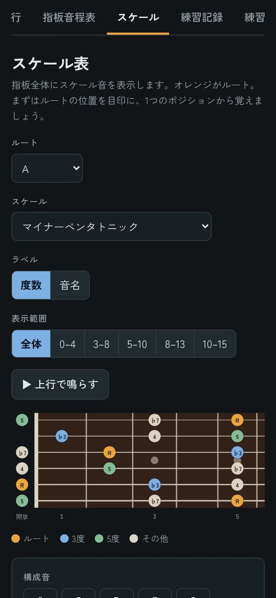
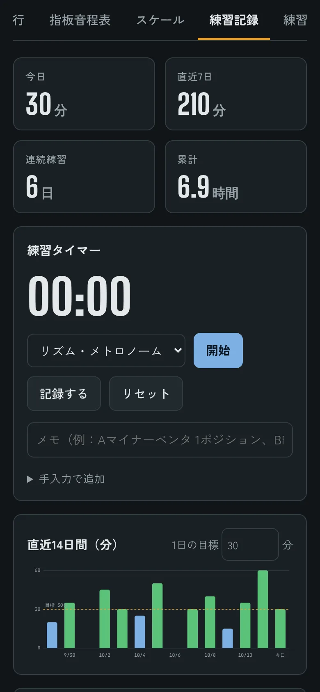

METRONOME · DRUMS
クリックだけじゃない、ドラムで鳴るメトロノーム
8ビート、16ビート、シャッフル、ボサノヴァ、ワルツまで15パターン。バンドで弾いているときのノリを、一人でも練習できます。
- BPM 30〜260、タップでテンポ入力
- ウッドブロックやカウベルなどクリック音色10種


ドラムに合わせてテンポ練習、マイクでチューニング、100のコード進行を伴奏つきで。スマホのホーム画面に入れて、ギターの横にいつでも置いておけます。

アプリをいくつも行き来せずに、ウォームアップから曲の練習、記録まで。
8ビート、16ビート、シャッフル、ボサノヴァ、ワルツまで15パターン。バンドで弾いているときのノリを、一人でも練習できます。


カノン進行、王道進行、丸サ進行、12小節ブルース、ツーファイブ。好きなキーに移調して再生すると、今のコードと次のコードの押さえ方が順番に出てきます。
弦を鳴らすだけで、音名とずれ（セント）を表示。±5セント以内に入ると緑に変わります。耳で合わせたいときは基準音も鳴らせます。

コードは1つにつき2〜4通りの押さえ方。丸の中に「R・3・5・♭7」と度数が出るので、形だけでなく中身で覚えられます。


タイマーで練習時間を計って、内容と一緒に記録。直近14日のグラフ、連続練習日数、累計時間がひと目でわかります。

ブラウザで開いて、ホーム画面に追加すれば、普通のアプリと同じように全画面で使えます。一度開けば、電波のない場所でも動きます。
パソコンでも Chrome や Edge でそのまま使えます。チューナーを初めて使うときは、マイクの使用を「許可」してください。
はい、すべての機能が無料です。広告もアプリ内課金もありません。
不要です。開いてすぐに使えます。メールアドレスなどの個人情報も入力しません。
お使いの端末のブラウザの中に保存されます。サーバーには送られません。そのため、機種変更や別の端末に移すときは、練習記録の画面の「バックアップ / 復元」を使ってください。
マイクの音は端末の中で音程を計算するためだけに使い、保存も送信もしません。
一度開いたあとはオフラインでも動きます。ホーム画面に追加しておくのがおすすめです。
iPhone の消音（マナーモード）がオンになっていると、メトロノームやドラムの音が鳴りません。消音をオフにしてお使いください。